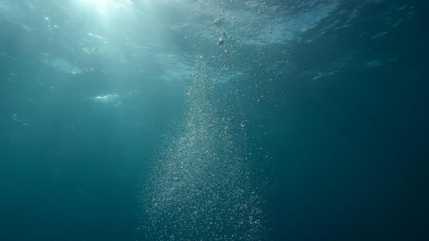
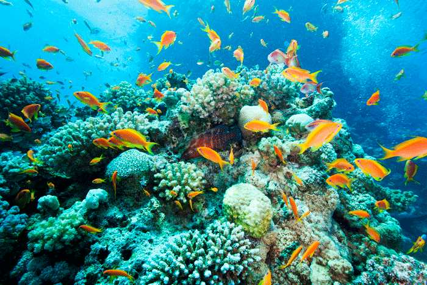

La importancia de la vida marina
Los océanos y los mares son el corazón de nuestro planeta, debido a que producen más de la mitad del oxígeno que respiramos, y regulan el clima global.
Además, gracias a ellos, es posible conseguir tanto alimentos, como otros recursos, agua e inclusive protección natural frente a catástrofes naturales. Sin embargo, hay un problema importante, la vida marina está amenazada principalmente por la contaminación, la pesca excesiva y el cambio climático.
Al dañarse y deteriorarse estos ecosistemas, su habilidad para mantener la vida en el planeta y brindarnos beneficios fundamentales, también se ve comprometida.
Por eso, es fundamental el protegerlos y el promover su conservación. Si preservamos la biodiversidad marina no solo estaremos salvando a los animales, sino que también nos aseguramos de tener un planeta sano, equilibrado y sostenible para nosotros y para las futuras generaciones.

La diversidad marina

Tanto en el mar como en el océano se encuentran hábitats muy distintos entre sí, como los arrecifes de coral, los manglares, las zonas abisales, etc, que suman diferentes condiciones de luz, presión, temperatura y nutrientes, y permiten que se desarrollen formas de vida adaptadas de manera muy especializada.
Dentro de estos, la diversidad no se limita únicamente al número de especies, sino que se manifiesta también a nivel genético e incluso de estructuras de ecosistemas completos.
Por ejemplo, algunos arrecifes de coral ocupan menos del 1% del fondo oceánico, pero soportan alrededor del 25% de todas las especies marinas registradas. Igual que las zonas profundas del océano, que, aunque sean menos visibles, contienen sujetos únicas que viven bajo presión extrema y sin luz solar, lo que añade otro nivel de diversidad.
La variedad de hábitats marinos crea una red compleja de interacciones, es decir, hay especies que actúan como depredadores, presas, organismos sustrato o simbiontes, todas adaptadas a nichos muy concretos de luz, temperatura, corrientes o nutrientes.
A su vez, esta diversidad estructural y funcional hace que la vida marina tenga una variedad de formas, tamaños y modos de vida y que cada hábitat sea como un pequeño mundo por explorar.